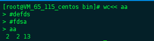
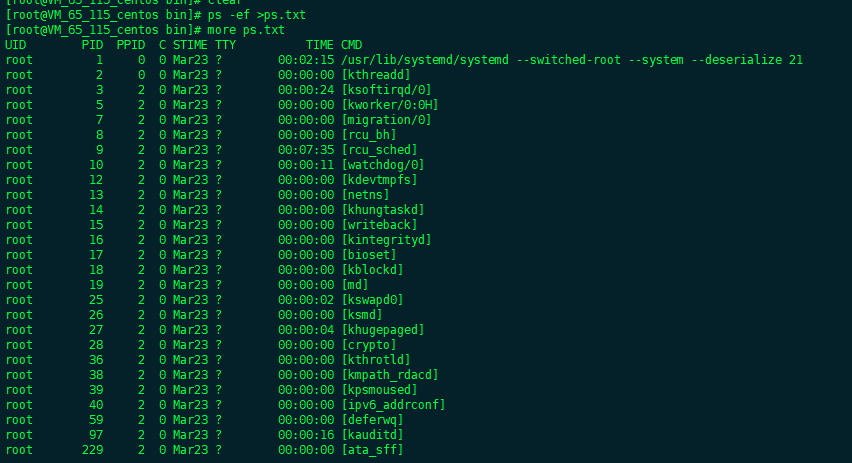
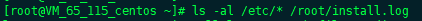
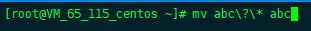
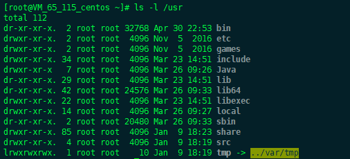
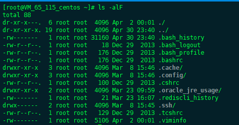
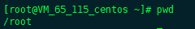
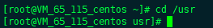

Linux常用命令及使用技巧
3.1 Linux控制台的使用
3.1.1 什么是Shell
shell 本身是一个以C语言编写的程序，是用户和操作系统内核之间通信的桥梁。shell既是一种命令解释程序，又是一种功能 强大的解释型程序设计语言。作为命令解释程序，shell解释用户输入的命令，然后提交到内核处理，最后把结果返回给用户。 为了加快命令的运行，同时更有效地定制shell 程序，shell 中定义了一些内置命令， 一般把shell 自身解释执行的命令称为内置命令。 例如， 下面将要讲到的cd、pw d、exit 和echo等命令， 都是属于bash的内置命令。 当用户登录系统后，shell 以及内置命令就被系统载入到内存，并且一直运行， 直到用户退出 系统为止。 除了内置命令 之外，Linux系统上还有很多可执行文件。 可执行文件类似于Windows下的 xe.e 文件，这些可执行文件也可以作为shell 命令来执行。其实Linux上很多命令 都不是shell的内置命令。 例如，ls就是一个可执行文件，存放在 /bin/ls中 。这些命令与shell 内置命令不同， 只有当它们被调用时， 才由系统装入内存 执行。 最后，shell还是强大的解释型程序设计语言， 它定义了各种选项和变量，几乎支持高级程序语言的所有程序结构，如变量、函数、表达式和循环等。利用shell可以编写shell脚本程序，类似于Windows/DOS下的批处理文件，但是shell功能更加完善，更加强大。
3.1.2 shell命令的语法分析
shell 语法分析是指shell对命令的扫描处理过程，也就是，把命令或者用户输入的内容分解成要处理的各个部分的操作。在Linux系统下，shell语法分析包含很多内容，如重定向、 文件名扩展和管道等。
- shell的命令格式
用户登录系统后，shell命令行启动。shell遵循一定的语法格式将用户输入的命令进行分析解释井传递给系统内核。shell命令的一般格式为：</br>
commantd [options] {arguments}</br> 其中，</br> - command:表示命令的名称
- options:表示命令的选项
- arguments:表示命令的参数
在命令行中，选项是包含一个或多个字母的代码，主要用于改变命令的执行方式。 一般在选项前面有一个 “ － ” 符号，用于区别参数。
- shell 的通配符
配符主要是为了方便用户对文件或者目录的描述，例如， 当用户仅仅需要以 “ 血”结尾的文件时， 使用通配符就能很方便地实现。 各个版本的shell都有通配符， 这些通配符是一些特殊字符， 用户可以在命令行的参数中使用这些字符， 进行文件名或者路径名的匹配。shell将把与命令行中指定的匹配规则符合的所有文件名或者路径名作为命令的参数， 然后执行这个命令。
bash中常用的通配符有“＊”、“？”、“［］”
(1) ”*” 匹配任意一个或多个字符
(2) "?" 匹配任意单一字符
(3) ”[]" 匹配任何包含在万括号内的单字符
(4) 通配符的组合使用
#ls [0~9]?.conf这条命令列出当前目录下以数字开头，随后一个是任意字符，接着以 “ .conf” 结尾的所有文件。 - shell 的重定向
Linux下系统打开3个文件，即标准输入、标准输出和标准错误输出。用户的shell将键盘设为默认的标准输入，默认的标准输出和标准错误输出为屏幕。也就是用户从键盘输入命令，然后将结果和错误消息输出到屏幕。
所谓的重定向，就是不使用系统默认的标准输入/输出,而是重新指定，因此重定向分为输入重定向、输出重定向和错误输出重定向要实现重定向就需要了解重定向操作符，shell 就是根据重定向操作符来决定重定向操作的。
(1) 输入重定向
输入重定向用于改变命令的输入源，利用输入重定向，就可以将一个文件的内容作为命令的输入，而不从键盘输入。
用于输入重定向的操作符有 “<code><” 和 “
<<”。</br> 这里用WC命令统计输入给它的文件／etc/inittab的行数、 单词数和字符数。</br> 连有一种输入重定向操作符 “＜＜飞这种重定向告诉shel l， 当前命令的标准输入为来自 命令行中一对分隔号之间的内容。  上面的 命令将一对分隔号aa之间的内容作为WC命令的输入。 分隔号可以是任意字符。 shell将在第一个分隔号后开始读取内容， 直到出现另一个分隔号读取结束， 然后将内容送给WC命令处理。 (2）输出重定向 输出重定向不是将命令的输出结果在屏幕输出， 而是输出到一个指定文件中。 在Linux下输出重定向用得很多。 例如， 某个命令的输出很长， 一个屏幕无法显示完毕，这时可以将命令的输出指定到一个文件， 然后用 more命令查看这个文件， 从而得到命令输出的完整信息。 用于输出重定向的操作符有 “ ＞ ” 和 “ ＞＞ ”。#ps -ef >ps.txt这条命令将ps -ef输出的系统运行进程信息全部输入到了ps.txt文件， 而不输出到屏幕， 可以用more命令查看ps.txt文件中系统运行的进程信息。 #more file1 file2 file3 >file其中，more命令用于查看文件的内容，上面的命令是将自file2、file2和自file3的内容全部输出到file文件中，类似于文件内容的合并。 如果在 “>” 后面指定的文件不存在，shell就会自动重建一个;如果文件存在，那么这个文件原有的内容将被覆盖；如果不想覆盖存在的文件，可以使用 “>>” 操作符。 例如  这条命令将／etc 目录及其子目录下的所有文件信息追加到／root/install.log 文件的后面。 /root/install.log文件原来的内容仍然存在。 (3) 错误重定向 错误重定向和标准输出重定向 一样，可以使用操作符 “ 2＞” 和 “ 2＞＞” 实现对错误输出,例如 其中，即是打包命令，可以在屏幕上看到tar的解压过程。如果“text.tar.gz ” 是个损坏的压缩包，就会把错误消息输出到eηor且t文件。 - shell的管道 管道可以把很多命令连接起来，可以把第l个命令的输入当作第2个命令的输出，第2命令的输出当作第3个命令的输入，依此类推。因此，管道的作用就是把一个命令的输出当作下一个命令的输入，而不经过任何中间文件。 这条命令表示将／etc吕录以及子目录下的所有文件分屏显示。
- shell中的引用 (1)转义字符 “\”  上面是将 abc？＊重命名为 abc (2）单引号“‘” 如果将字符串放到一对单引号之间，那么字符串中所有字符的特殊含义将被忽略， (3) 双引号““”” 双引号的引用与单引号基本相同， 包含在双引号内的大部分特殊字符可以当作普通字符处理， 但是仍有一些特殊字符即使用双引号括起来，也仍然保留自己的特殊含义， 比如 “$”,"\","'"
- shell的自动补全命令行
当用户输入某个命令的一部分后， 按Tab键，shell就会根据系统环境变量信息提示出与 用户输入命令相似的所有命令和文件，
3.2 系统管理与维护
3.2.1 ls命令
ls命令显示指定工作目录下的内容，列出工作目录所含的文件及子目录。此命令与Windows下的dir类似。 另外，Linux也提供了dir命令，用户也可以用dir命令代替ls命令。 举例  以上命令列出/root 目录下文件及其子目录  以上命令显示/root下的所有文件及其子目录的详细信息，并显示文件类型标记3.2.2 ls命令
显示当前的工作目录， 执行pwd指令可立刻得知目前所在的工作目录的绝对路径名称， 3.2.3 cd 命令
改变当前工作目录， 其用法与Windows下的cd类似。 具体的语法格式如下。  以上命令进入到usr目录下3.2.4 date命令